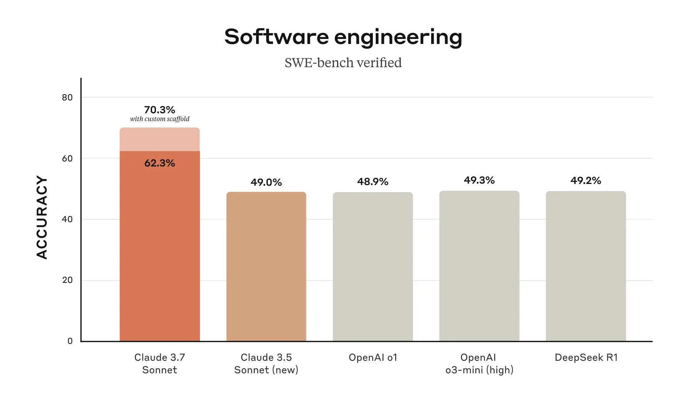

Link. Originally published: Feb 24, 2025.
we’re announcing Claude 3.7 Sonnet1, our most intelligent model to date and the first hybrid reasoning model on the market.
API users also have fine-grained control over how long the model can think for
we’re also introducing a command line tool for agentic coding, Claude Code. Claude Code is available as a limited research preview, and enables developers to delegate substantial engineering tasks to Claude directly from their terminal.
Claude 3.7 Sonnet has the same price as its predecessors: \$3 per million input tokens and \$15 per million output tokens—which includes thinking tokens.
Just as humans use a single brain for both quick responses and deep reflection, we believe reasoning should be an integrated capability of frontier models rather than a separate model entirely. This unified approach also creates a more seamless experience for users.
Second, when using Claude 3.7 Sonnet through the API, users can also control the budget for thinking: you can tell Claude to think for no more than N tokens, for any value of N up to its output limit of 128K tokens. This allows you to trade off speed (and cost) for quality of answer.
Third, in developing our reasoning models, we’ve optimized somewhat less for math and computer science competition problems, and instead shifted focus towards real-world tasks that better reflect how businesses actually use LLMs.

Claude Code is an active collaborator that can search and read code, edit files, write and run tests, commit and push code to GitHub, and use command line tools—keeping you in the loop at every step.
In early testing, Claude Code completed tasks in a single pass that would normally take 45+ minutes of manual work, reducing development time and overhead.
Our GitHub integration is now available on all Claude plans—enabling developers to connect their code repositories directly to Claude.

Thoughts
-
My speculation for “fine-grained control over how long the model can think for” is probably through a condition for generating
</think>or some such token to early-stop thinking during the decoding process. -
Anthropic taking initial steps towards a product through Claude Code is very exciting. As a frontier AI company training the SOTA models, they are well-positioned to develop products using more than just the API. This is following OpenAI’s approach with products like SearchGPT.
-
“Claude Code…completed…in…single pass…that would normally take 45+ minutes…” is just scratching the surface of the productivity gains possible. There are so, so many human tasks that can be easily automated with current LLMs already. An easy way to think about this is to focus on a single occupation in an economy at a time:
- Programmer: migrating codebases across versions, libraries, etc., like Google and Airbnb did
- Doctor: diagnosis and prognosis largely
- Executive Assistant: most operational tasks like scheduling/re-scheduling meetings (e.g., move all meetings after 3pm 45 minutes ahead), responding to basic queries on behalf of their managers
- Taxi Driver: helping drivers better achieve goals like “I want to complete 10+ rides in the Queens region by 8pm”
Of course, deeper domain knowledge about an area will help you identify problems and develop solutions better. As an AI researcher, here are things I would like to be automated for me:
- There’s a new model/dataset on HuggingFace. Analyze/evaluate this new artifact and present a report of how this compares to this other version from a week ago
- Sift through my X/Twitter timeline to prepare a non-ad-revenue optimized version for my mood - AI news/funny memes/business news/cat gifs, etc.
- Turn last week’s popular AI papers on arxiv into a weekly newspaper like update for easy consumption
- Send me a quiz on core ML/math and grade my solutions
- … and so many more! It’s such an exciting future!
-
My final thoughts go to what Anthropic predicts for 2027 - “Claude pioneers”. That’s the open-ended bit in my opinion. From my shaky ML/DL foundations, I understand that we are curve-fitting, i.e., fitting functions between existing data points, or interpolation between existing knowledge. “Pioneering” would mean extrapolating, i.e., coming up with a new perspective not in any of the current data points - this in my opinion is non-trivial from current methods. Maybe RL will take us there? Time (and experiment) will tell.